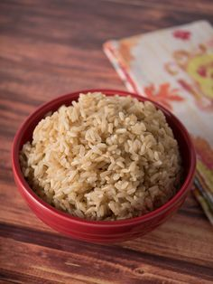

Acid Reflux
The Best and Worst Foods for Acid
Reflux Diet changes can significantly affect acid reflux and
allow you to avoid other treatments. A hot burning in the chest, a bitter taste in the throat,
a gassy bloating in the stomach acid reflux is no picnic. What you eat, however, can have an impact. The best and worst foods for acid reflux could spell the difference between sweet relief and sour misery. Acid reflux occurs when the sphincter at the base of the esophagus isn't working well, allowing fluid from the stomach to enter the esophagus. The worst foods
for reflux can worsen painful symptoms, while other foods can soothe them. Examples of the best foods for acid reflux include:
1. Chicken breast
Be sure to remove the fatty skin. Skip fried and
instead choose baked, broiled or grilled.

2. Lettuce, celery and sweet peppers
These mild green veggies are easy on the stomach -
and won't cause painful gas.

3. Brown rice
This complex carbohydrate is mild and filling - just
don't serve it fried.

4. Melons
Watermelon, cantaloupe and honeydew are all
Low-acid fruits that are among the best foods for acid reflux.

5. Oatmeal
Filing, hearty and healthy, this comforting breakfast
standard also works for lunch.
6. Fennel
This low-acid crunchy vegetable has a mild licorice
flavor and a natural soothing effect.